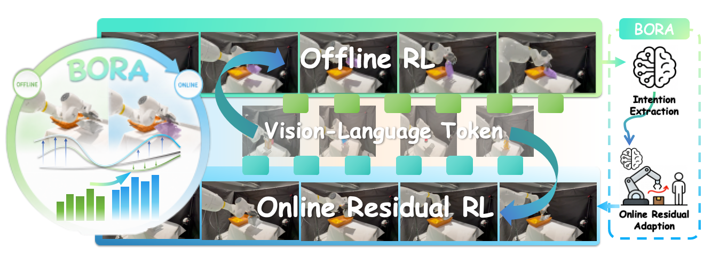
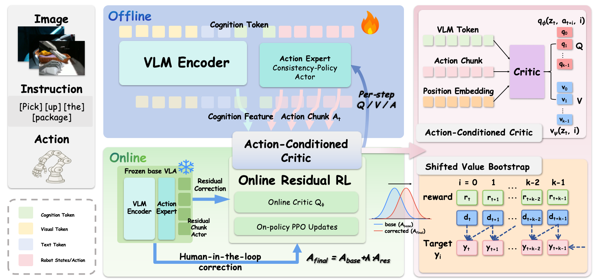
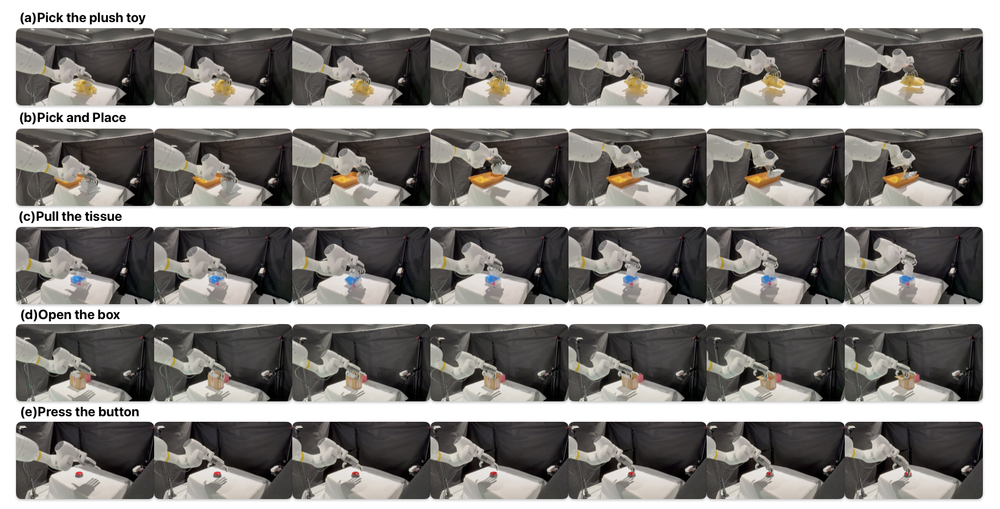

Abstract
Vision-Language-Action (VLA) models have emerged as a promising paradigm for grounding visual-language understanding into real-world robotic manipulation. However, dexterous manipulation remains challenging for VLA policies due to high-dimensional hand control and compounding execution errors, which makes real-world RL post-training essential for bridging the gap between visually grounded action generation and physically reliable dexterous execution. However, high-dimensional dexterous exploration often triggers temporal inconsistency, sample inefficiency and hardware risks in the real world. To address these challenges, we propose BORA, an offline-to-online RL post-training framework designed for real-world dexterous VLA models. In the offline phase, BORA constructs a critic that takes both the VLM's cognition tokens and action chunks as inputs. This design enables action-conditioned value guidance, allowing the critic to evaluate dexterous hand motions beyond visual context alone. During the subsequent online phase, BORA freezes the VLA base and introduces a lightweight, Human-in-the-Loop (HiL) chunk-wise residual adaptation mechanism to mitigate real-world execution errors and further correct the offline-learned intents within the actual physical environment. By inheriting the offline critic and employing intervention-driven rewards, BORA effectively corrects execution discrepancies and adapts to real-world physical variances while preserving the pretrained policy as a stable prior. Extensive evaluations across five complex real-world dexterous tasks demonstrate that BORA significantly outperforms pure imitation learning and traditional decoupled RL baselines, achieving a 33% absolute increase in average success rate under standard settings and up to a 43% improvement in unseen object generalization.

Contributions
- Token-Action Integrated Architecture: a critic that fuses continuous action chunks with VLM semantic features to mitigate visual value hacking and improve intent evaluation in offline RL.
- Lightweight Residual Online Adaptation: a Human-in-the-Loop residual chunk mechanism that freezes the VLA base while inheriting the offline critic for safe physical adaptation.
- The BORA Unified Framework: a complete Offline-to-Online post-training paradigm that improves success rates and real-world robustness for dexterous manipulation.
Pipeline
Open PDF
Illustration of the BORA framework. BORA bridges offline token-action reinforcement learning and online residual adaptation for real-world dexterous VLA policies. In the offline stage, the VLM encoder and action expert produce shared VLM tokens and action chunks, which are jointly evaluated by an integrated critic with semantic anchoring, temporal credit disentanglement, and IQL-based offline policy optimization. In the online stage, the offline-aligned base VLA is frozen, while a lightweight residual chunk actor is trained with inherited critic feedback, sparse task rewards, and human-in-the-loop intervention signals. The final action chunk is obtained by residual composition, A_final = A_base + lambda A_res, enabling low-cost physical adaptation and improved dexterous execution.
Results
Success Rate (%)Standard
Object-Unseen
Experiments
Open figure{kind=link}

Research Questions
RQ1
Can BORA improve offline RL post-training for dexterous VLA policies by providing action-conditioned value guidance under high-dimensional action generation and visual occlusion?
RQ2
How can the proposed online adaptation bridge the real-world deployment gap in a sample-efficient way?
RQ3
How does the inherited action-conditioned critic support residual policy learning during online fine-tuning?
RQ1 Analysis: Offline intent alignment with action-conditioned value guidance
As shown in the paper, CP Base reaches 53.0% average success under the standard setting but drops to 27.0% under object-unseen evaluation, indicating limited generalization in high-dimensional and multimodal dexterous action spaces. By routing informative policy gradients back into the foundational VLM within minimal steps, BORA-Offline extracts high-fidelity physical intents, improving the averages to 67.0% and 52.0%, respectively, yielding a 14-point gain in the standard setting and a 25-point gain under object-unseen evaluation. This shows that our truncated consistency policy formulation mitigates the gradient vanishing bottleneck of long denoising iterations.
Critic-decoupled baselines overfit to raw pixel values and spurious background features, propagating erroneous gradients back to the VLM backbone. In the standard setting, the decoupled-critic baseline falls below CP Base on average. Under object-unseen evaluation, it collapses on Open-the-Box, indicating unstable value guidance under severe occlusion. In contrast, the action-conditioned critic in BORA-Offline binds value updates to the multimodal latent space, improving robustness under occlusion.
RQ2 Analysis: Sample-efficient online physical adaptation
Despite the intent awareness established offline, real-world deployment introduces covariate shifts, execution errors, and intricate contact friction, causing a performance drop on object-unseen tasks. BORA-Full closes this gap with rapid convergence within the first two online RL rounds. In practice, the human operator intervenes only 1--2 times per task, requiring roughly 20% of the online trajectory time. With this residual adaptation, BORA-Full improves the overall average success rate to 86.0% in the standard setting and elevates it from 52.0% to 70.0% under the object-unseen configuration, achieving the best performance among evaluated baselines while preventing representation drift.
RQ3 Analysis: Mechanistic analysis of critic inheritance
The offline-trained action-conditioned critic, when combined with the online asymmetric intervention-driven reward, provides stable and responsive value estimation. Throughout autonomous execution, the inherited critic maintains high value confidence along successful trajectories while remaining low along failed trajectories, supporting reliable residual policy updates.
This discriminative capability persists even under severe occlusion. Although raw camera pixels appear similar to the decoupled baseline, the action-conditioned critic evaluates state-action pairs at a structural semantic level, penalizes high-risk execution states, and guides the residual policy with few physical interactions.
Standard
Object-Unseen
Citation
If you use this work, please cite:
@article{chen2026bora,
title={BORA: Bridging Offline Reinforcement Learning and Online Residual Adaptation for Real-World Dexterous VLA Models},
author={Zhongxi Chen and Yifan Han and Yanming Shao and Huanming Liu and Congsheng Xu and Xiaoyu Chen and Yao Mu and Wenzhao Lian},
journal={arXiv preprint arXiv:2605.30226},
year={2026},
url={https://arxiv.org/abs/2605.30226}
}